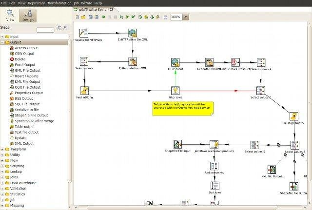

GIS * ,
ou uma introdução à análise de dados geográficos
Minha experiência com GIS
- 10+ anos
- Análise e implementação de GIS para web
- Projetos nas áreas de marketing, saúde, governamental, telecom, etc


GIS - Geographic Information System
Sistema computadorizado usado para:
- capturar,
- armazenar,
- gerenciar,
- recuperar,
- analizar,
- transformar e
- exibir
informações espaciais.
Problemas comuns ( matemática , geometria , trigonometria!!!)
- Projeção e conversão de mapas
- Georeferenciamento (atribuição de lat/long à informação)
- Geocodificação (tradução de endereço em lat/lon e vice-versa)
- Enriquecimento e ajustes de mapas
- Precisão e escala
- Rotas
Geocentrico

Geocentrico vs Geodesico
Convertendo entre as duas representações:

Onde está Wally?
Trilateração!
Ponto A ao Ponto B
ver também "A*" e "Contraction Hierarchies"
Fontes de mapas
- OpenStreetMaps
- Sites institucionais (IBGE, NASA, etc)
- Fornecedores privados ($$$)
- Online:
- http://www.naturalearthdata.com/
- http://github.com/fititnt/gis-dataset-brasil
- http://en.wikipedia.org/wiki/List_of_GIS_data_sources
Principais formatos de arquivos
- Vetor:
- Shapefile - ESRI
- GeoJSON - OSS
- DXF - Autocad
- KML - Google
- GPX - Rotas
- Raster:
- GeoTIFF
- JPEG2000
- MrSID
Bancos de dados Geo
Relacionais com extensão GIS - sintaxe SQL extendida para suportar análises que incluem dados espaciais.
- PostgresSql (PostGis)
- Oracle Spatial
- SpatiaLite (SQLite)
- SQL Server Spatial
- MySql Spatial
---- Consulta para encontrar vizinhos (Postgis)
SELECT g1.gid, g1.desc, g2.gid, g2.desc
FROM sometable As g1, sometable As g2
WHERE g1.gid = 1
and g1.gid <> g2.gid
ORDER BY ST_Distance(g1.the_geom,g2.the_geom);
Análises Espaciais
Manipulação de mapas
- ETL - GeoKettle
- Edição - QGIS + GRASS / Bibliotecas DB / Inkscape / Gimp
- Visualização - OpenLayer / MapBender / Oracle Maps**
- Rotas - Graphhopper / OptaPlanner
GeoKettle
QGIS
OSM
http://openlayers.org/en/v3.2.1/examples/
OSGeo
www.osgeo.org | www.osgeo.org/osgeo4w | live.osgeo.org
-=[ "live long and prosper" ]=-
_
.-T | _
| | | / |
| | | / /`|
_ | | |/ / /
\`\| '.' / /
\ \`-. '--|
\ ' |
\ .` /
| |